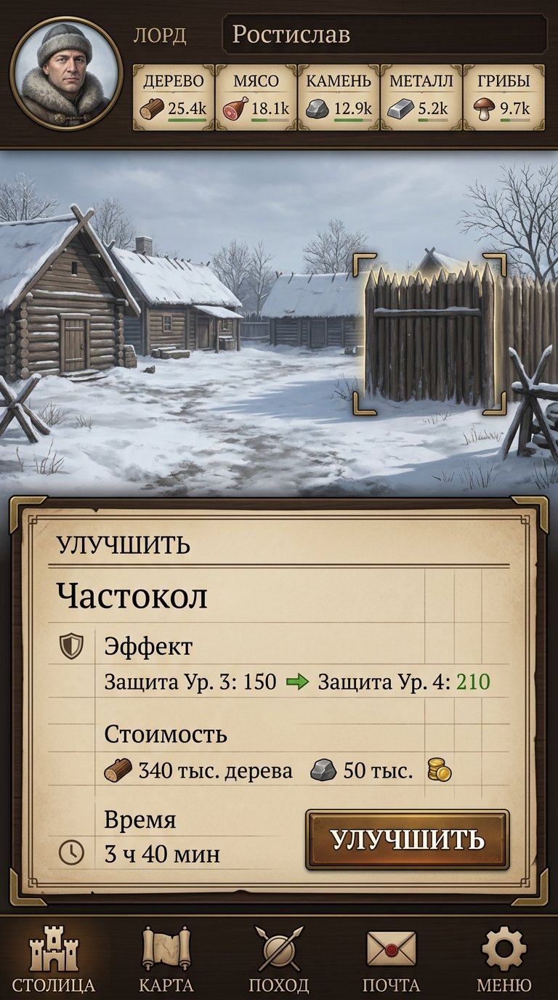
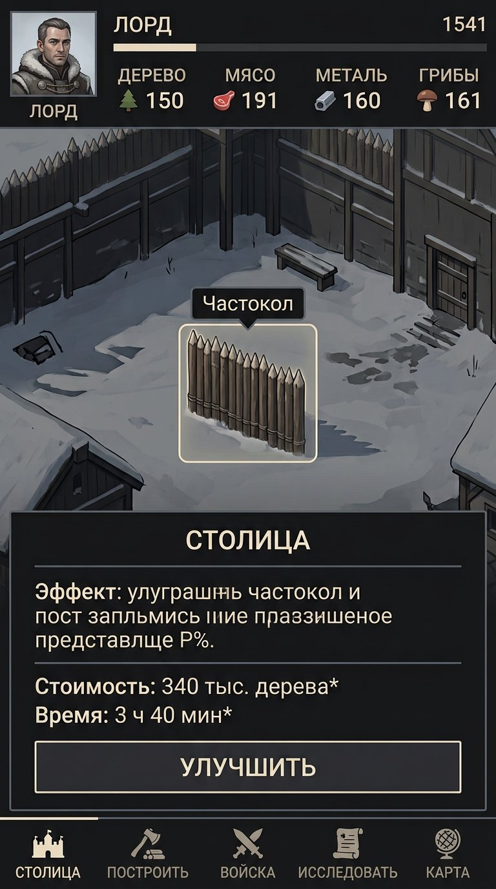
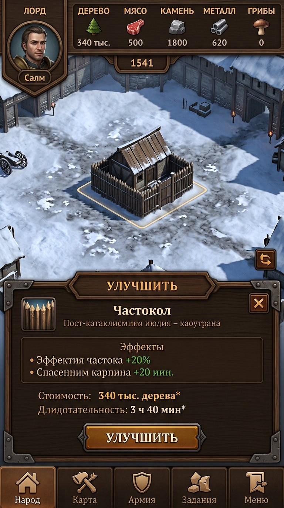
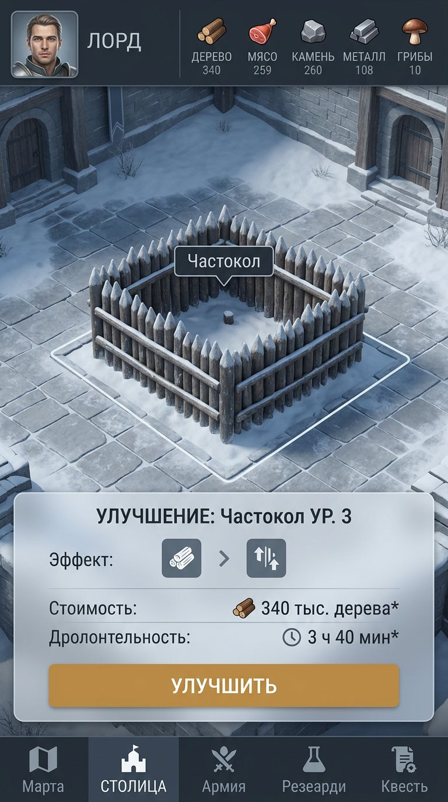
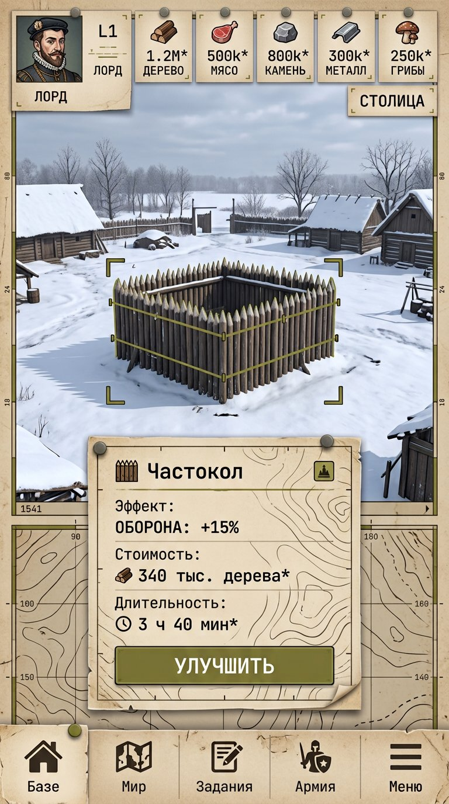
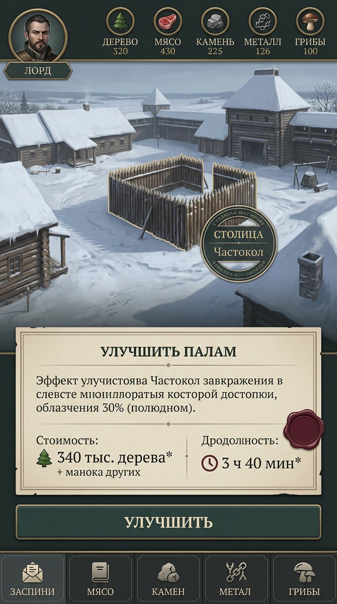
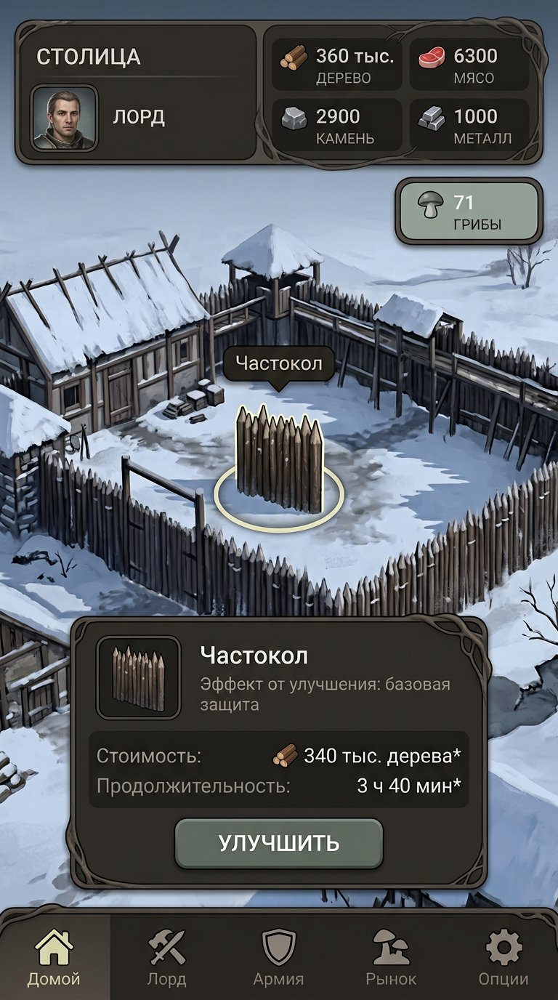
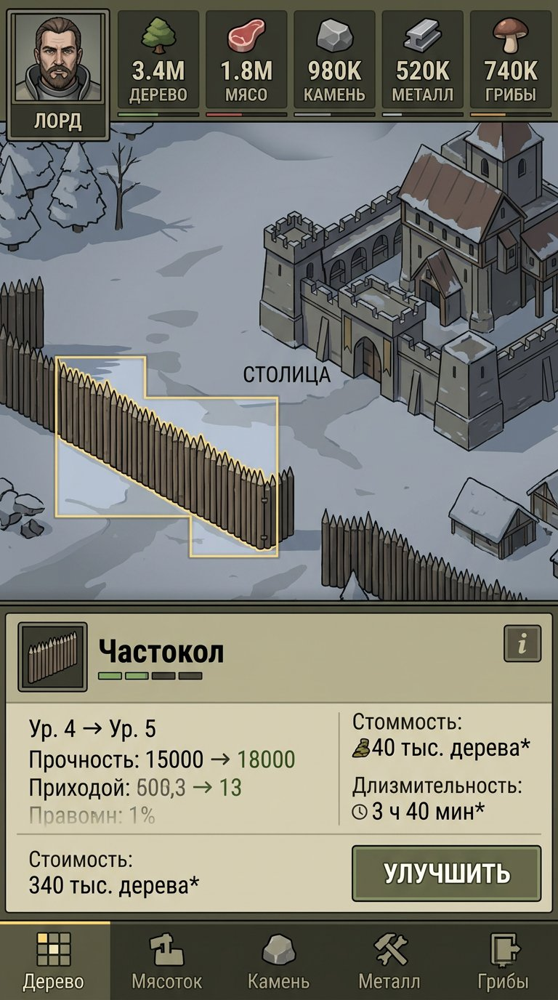
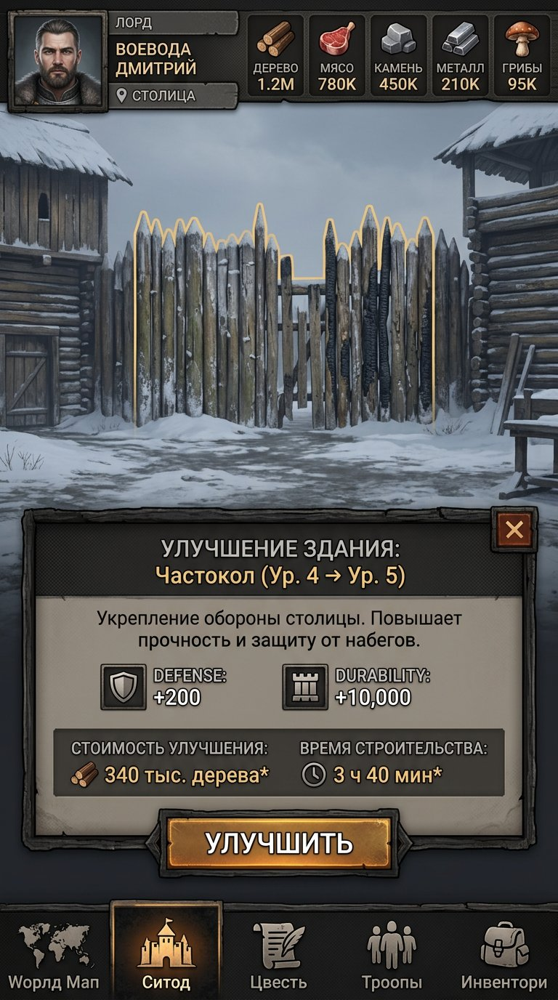
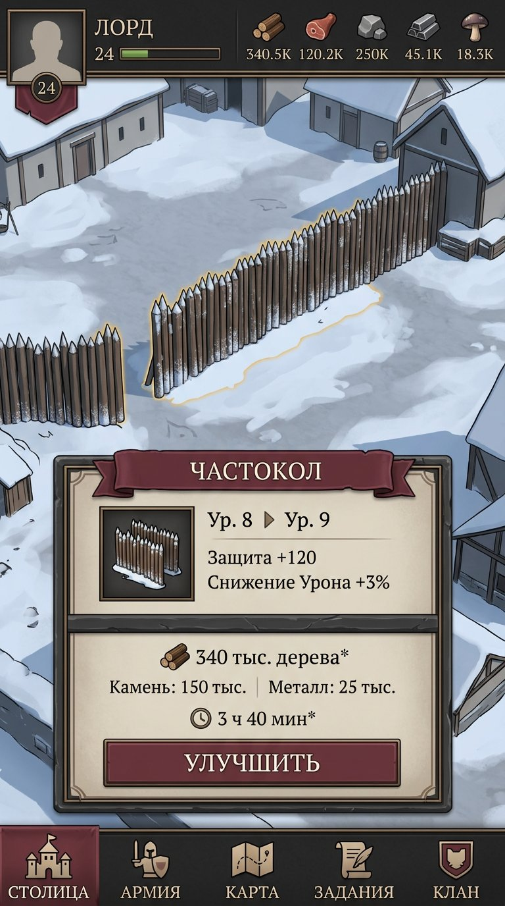

Хроника двора
Светлая летописная поверхность, строгая рамка и заголовки с засечками.
The Dead Lords · visual round 01
Архив ранних раундов: один и тот же экран проверял разные интерфейсные направления. Текущий рабочий концепт — единый Bone-Wood после лор-проверки; здесь доступны пять новых полноэкранных вариантов.

Светлая летописная поверхность, строгая рамка и заголовки с засечками.

Компактный высококонтрастный HUD, квадратная геометрия и минимум декора.

Панель как физическая часть двора: тёмная древесина и редкие кованые элементы.

Светлые каменные поверхности поверх холодной сцены, мягкая форма и тёплая команда.

Координатные отметки, топографическая фактура и числа в стиле полевой ведомости.

Архивные разделители и редкая печать для срока или подтверждения — без королевского трона.

Мягкие органические контуры и отдельный грибной акцент без свечения и магии.

Табличная иерархия, короткие подписи и статусы для чисел и отрядов.

Суровый матовый интерфейс и след катастрофы в материале, не в хоррор-образах.

Светлый камень, двойная рамка и тканевый акцент для человеческой власти и клана.